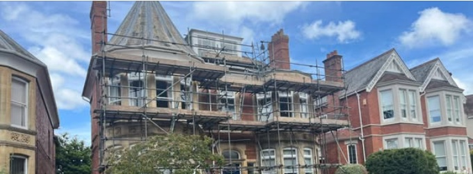
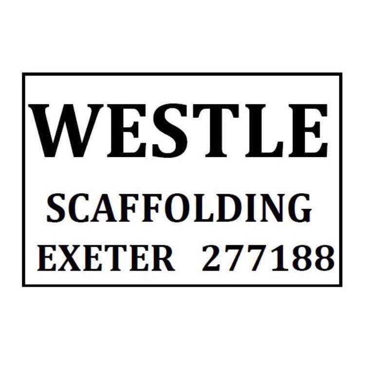
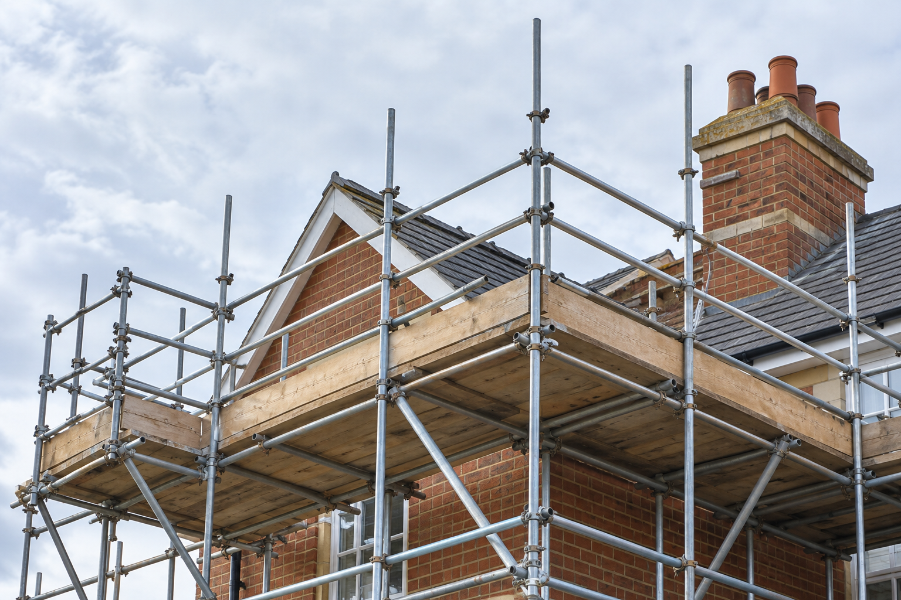

Recent work · Exeter

WESTLEReliable scaffolding for homes, roofing and larger projects. Bringing over 30 years of experience to every job.
Discuss your project ↗From a home improvement to a larger build, the right access makes all the difference.


Westle Scaffolding is an Exeter-based, family-run business with over 30 years of experience. Whether you are improving your home, working on a roof or planning a larger project, talk to us about the access you need.
Practical scaffolding solutions for work at every scale.
Access for home improvements, repairs and renovation work.
Scaffolding support for roof repairs and roofing projects.
Scaffolding for commercial buildings and larger projects.
Tell us what you are planning and discuss the access you need.
Have a project in mind? Get in touch with our Exeter team to discuss your requirements and request a quote.
Call 01392 277188 ↗